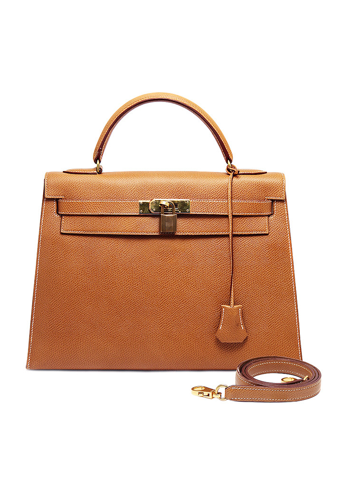
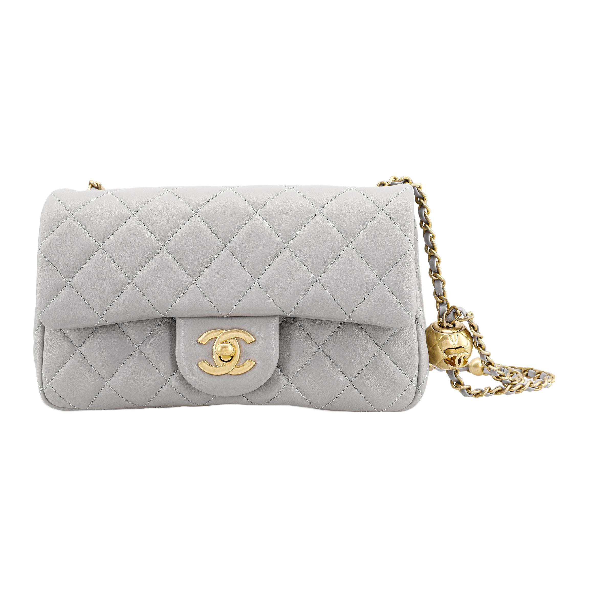
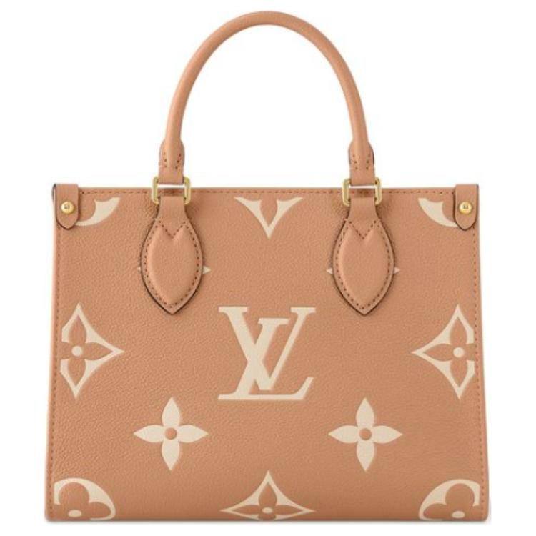
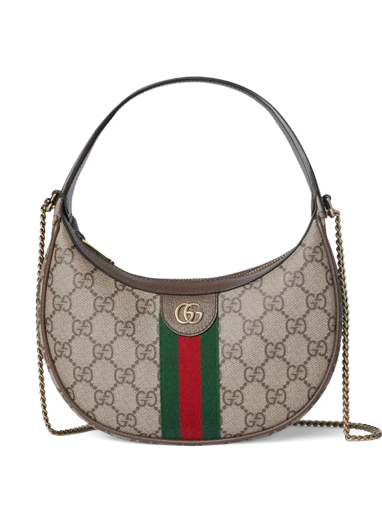
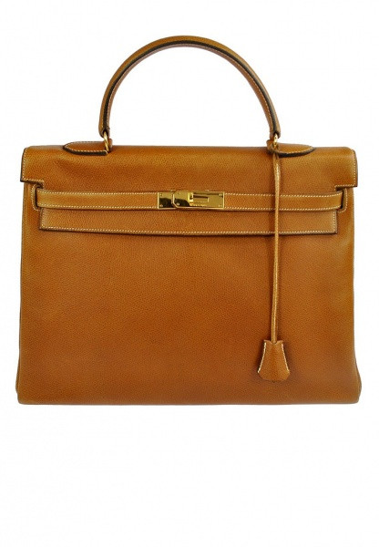

HERMÈS
HERMÈS
01 / ICONIC MODEL
Birkin
Одна из самых узнаваемых сумок Hermès. Именно Birkin занимает особое место в рассказах Игоря о коллекционировании.
Обсуждается в интервьюTHE WORLD OF LUXURY
THE ART OF LUXURY
Hermès, Chanel, Louis Vuitton и мир высокой моды в жизни Игоря Синяка.
A PASSION FOR FASHION
Дизайнерские сумки стали важной частью публичного образа Игоря Синяка. В своих публикациях и интервью он рассказывает о люксовых покупках, винтажных находках и коллекционировании.
Особое внимание уделяется французскому модному дому Hermès и культовым моделям Birkin.
DESIGNER COLLECTION
Визуальный каталог моделей и брендов
HERMÈS
Одна из самых узнаваемых сумок Hermès. Именно Birkin занимает особое место в рассказах Игоря о коллекционировании.
Обсуждается в интервью
HERMÈS VINTAGEВинтажные изделия Hermès и редкие находки. В интервью обсуждается покупка винтажной Birkin на парижском рынке Saint-Ouen.
Покупка обсуждалась публично
CHANELЗнаковая модель Chanel с узнаваемой стёганой фактурой и фирменной застёжкой.
Пример модели бренда
LOUIS VUITTONФранцузский модный дом, известный кожаными аксессуарами и фирменными узорами.
Бренд упоминается в публикациях
GUCCIИтальянский бренд с богатой историей, узнаваемым дизайном и винтажными моделями.
Пример модели бренда
VINTAGE FINDSВинтажные аксессуары и необычные экземпляры, которые представляют интерес для коллекционеров.
Тематическая подборка
A SPECIAL PURCHASE
В интервью с Ксенией Собчак Игорь рассказал о приобретении винтажной Birkin на парижском рынке Saint-Ouen.
Стоимость покупки, озвученная в интервью.
THE STORY BEHIND THE COLLECTION
В январе 2026 года появились сообщения об ограблении квартиры Игоря в Париже. По первоначальным сообщениям французской прессы, среди похищенного имущества было около 25 люксовых сумок, включая примерно 10 Hermès.
Позднее Игорь оценивал общие потери примерно в 600 000 евро. Это его более поздняя оценка, а не первоначальная оценка прессы.
Подробнее об истории ограбления →REFERENCES